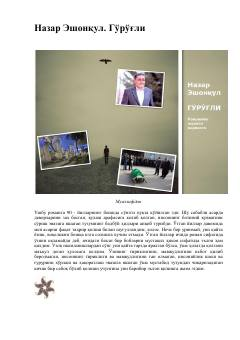

GYTotalitar tuzum illatlari va inson ruhiyatini ochib beruvchi o'tkir mazmunli roman.
Ushbu roman sovet tuzumining soʻnggi yillaridagi muhitni, insoniylik shaʼni va gʻururi poymol qilingan davr illatlarini ochib beradi. Asar bosh qahramonining rahbar huzuriga chaqirilishi bilan bogʻliq voqealar orqali jamiyatdagi sunʼiylik va qoʻrquv muhitini mahorat bilan tasvirlaydi.